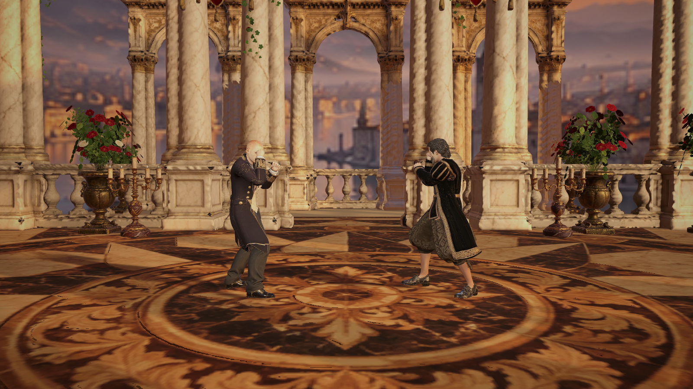
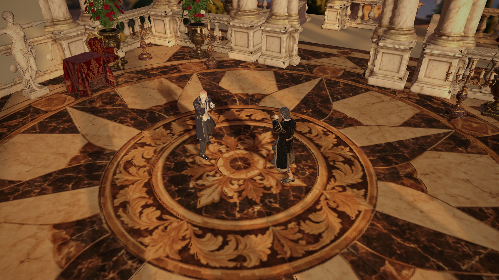
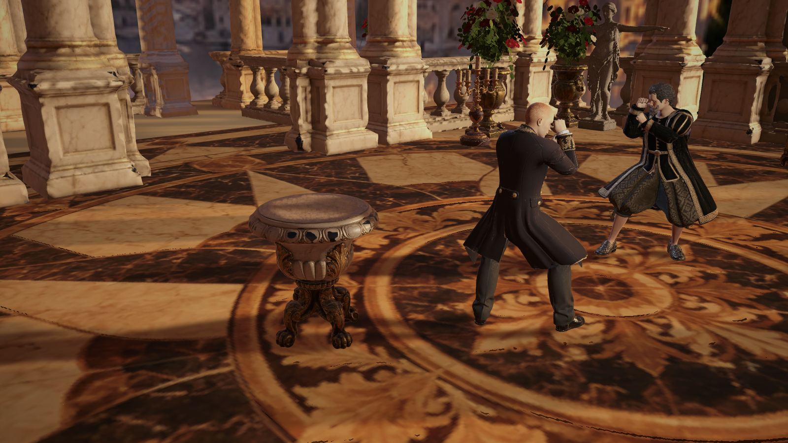

El sol de la panoràmica i la llum direccional existent coincideixen en azimut 125° i elevació 19°. S’ha reorientat la panoràmica per conservar la direcció amb què es va preparar el bake.
El focus de suport per a les ombres dels personatges és a 80 metres, alineat amb el sol al centre del ring: els raigs són gairebé paral·lels dins la zona de combat. Aquesta és una aproximació amb un únic mapa d’ombres, no una segona direcció de sol.


Recipient temporal utilitzat només per verificar la recepció de les ombres.

Aplicat a les 15 escenes de Monteverdi i als tres prefabs mestres. Bake existent conservat; no s’ha recalculat. Low conserva el contacte simplificat. Les captures són natives de Unity.
Verificació